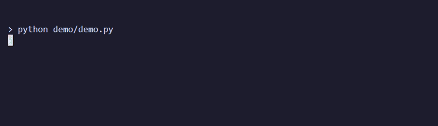

pi-voice-win
Hold Space, talk, let go. The words land in your pi prompt. Nothing leaves the machine.

Install
pi install git:github.com/axvg/pi-voice-winFirst session downloads the model (487 MB) into ~/.pi/models/. After that it works offline. You need Git for Windows, which pi already requires.
Why another one
I tried the existing pi dictation extensions on Windows. The ones that run offline either wanted sox or ffmpeg on PATH, or shipped Whisper base, which mishears Spanish and invents "thanks for watching" in silence. The rest need an API key.
This one captures audio through WASAPI directly (via decibri), and decodes with NVIDIA's Parakeet TDT 0.6B v3 through sherpa-onnx. Parakeet picks the language itself across 25 of them, writes punctuation and casing, and returns an empty string for silence.
Numbers
Measured on a Ryzen 5 2400G, no GPU, int8 model:
| Model load | 3.4 s, once per session |
|---|---|
| 5 s Spanish phrase | 1.35 s to text (RTF 0.25) |
| RAM | about 1 GB |
| Disk | 640 MB |
| Hold warmup | 2 key-repeats, about 0.55 s |
How the hold works
Terminals don't send key-up, so the extension watches key-repeat. The first Space types a space as usual. Once repeats arrive it deletes that space and opens the mic. When repeats stop for 350 ms it closes the mic and transcribes. Windows Terminal 1.22+, WezTerm and Ghostty speak the kitty keyboard protocol, and there pi receives a real key-up, so recording stops the instant you let go.
Settings
Optional file at ~/.pi/agent/pi-voice-win.json. Every key has a default.
| model | parakeet-v3 (auto language) or canary-180m (smaller, en/es/de/fr, needs language) |
|---|---|
| live | on. Words appear while you hold; each phrase is re-decoded every second and committed after 700 ms of silence |
| decode | worker (default) keeps the prompt responsive. inline is only allowed with live: false |
| threads | half the logical CPUs by default |
| device | substring of the mic name. /voice devices lists them |
| releaseMs | 350. Raise if recording cuts out mid sentence |
| maxSec | 60. Hard stop if the hold never releases |
What it does not do
- macOS or Linux. The mic path is WASAPI and the tar path is Git's. Not planned.
- Coexist with another custom editor (vim mode). It replaces the editor component.